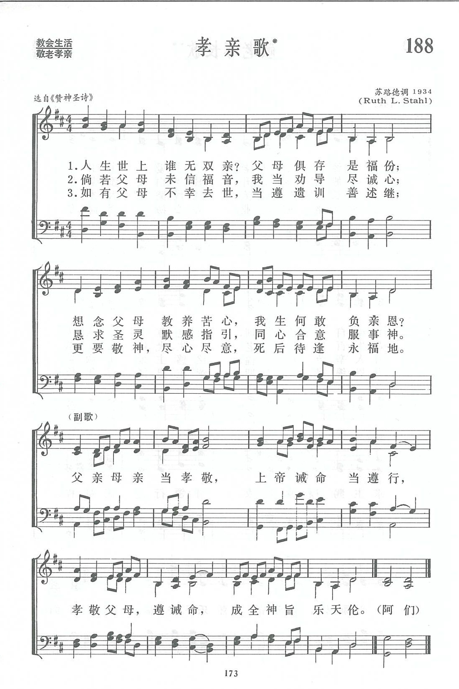

|
|
【孝親歌】 |
|
|
人生世上誰無雙親？父母俱存是福份； |
|
https://www.zanmeishige.com/tab/13861.html?songbook=1&index=188
 |
|
|
|
|

- 【 讚美365 】 第131期 孝親歌
https://youtu.be/kGdLMxJQTaA
第188首 孝亲歌* _苏路德(Ruth L．Stahl) Honour thy father and mother
经文：“要孝敬父母，使你得福，在世长寿。这是第一条带应许的诫命”（弗6：2-3)。
孝敬父母是我国传统道德，也是圣经的教训，明载在十条诫命的第五条。
使徒保罗进一步教导信徒“要孝敬父母，使你得福，在世长寿。这是第一条带应许的诫命”(弗6：2-3)。这首《孝亲歌》也就是把经训与孝亲结合起来的一首圣诗，原载华北长老会于1911年在北京编辑出版的《赞神圣诗》第426首。
原诗共有五节，选入《普天颂赞》时已略去以下两节(《新编》沿用《普天颂赞》的词句)：
养我教我备受辛勤，有疾病更为关心，
孝亲大道古传至今，子不孝何得贤孙。
父母有时向我发怒，我仍然诚心爱慕，
因过被责也当顺服，求自新痛改错误。
《赞神圣诗》所配的曲调，名为《困惫可获安宁(REST FOR THE WEARY)》。选入《普天颂赞》时，美国来华女传教士苏路德(Ruth L．Stahl)仿照我国音乐曲调谱一新调，名叫《孝亲(FILIAL PIETY)》。苏路德多年在北京燕京大学音乐系任钢琴教授，经她培养出来的钢琴家，目前仍有多人在全国各音乐学院教授钢琴。
https://www.xueshengshi.com/?p=6424
【 讚美365 】 第131期 孝親歌
在第131期節目當中我將為您介紹創作于20世紀初的讚美詩《親孝歌》孝敬父母是我國的傳統道德，也是聖經的教訓，明載在十誡的第五條。使徒保羅進一步教導門徒“要孝敬父母，使你得福，在世長壽。這是第一條帶應許的誡命。”這首《孝親歌》是將聖經的教訓與孝親結合在一起的聖詩，原載于華北長老會于1911年在北京編輯出版的《贊神聖詩》第426首。原詩共5節，選入《普天頌贊》時已略去兩節，《新編》沿用《普天頌贊》的詞句“養我教我備受辛勤，有疾病更為關心，孝親大道古傳至今，子不孝何得賢孫。父母有時向我發怒，我仍然誠心愛慕……” 《贊神聖詩》所配的曲調名為《困憊可得安寧》選入《普天頌贊》時，美國來華女傳教士蘇路德仿照我國音樂曲調譜一新調名叫《孝親》下面我們有請楊老師獻唱新編讚美詩第188首《孝親歌》
https://www.youtube.com/watch?v=kGdLMxJQTaA
452 啥人出世無有父母？ 華語：人生世上誰無雙親？ 孝道、敬老尊賢是中國人很重視的傳統道德，也是聖經的教訓：「要孝敬父母，使你得福，在世長壽。這是第一條帶應許的誡命。」（弗六2-3） 這首聖詩是勸人要遵行父母的教訓、為父母的信仰代禱、繼承他們的遺訓，首見於1911 年中國華北長老教會所出版的《讚神聖詩》，原有五節，其中有兩節較消極的詩詞在《普天頌讚》已被刪除。曲調「孝親」（FILIAL PIETY）是1934 年美國宣教師蘇路德（Ms. Ruth L. Stahl）模仿中國風格do re mi sol la 的五聲音階所譜，原為范天祥（Bliss Wiant, 1895-1975）所配和聲（王1993: 312）。本版聖詩的這個編配是1981 年在美國為編輯亞洲人的《四風聖詩》（Hymns from the Four Winds）時請蕭泰然（1938 年生）教授所配簡單對位的和聲，保持華樂之特色。 在談論孝道、家庭主日、紀念先人、父、母親節均可唱此詩。（LIT） |
http://hymn.pct.org.tw/Hymn.aspx?PID=P2011111800013